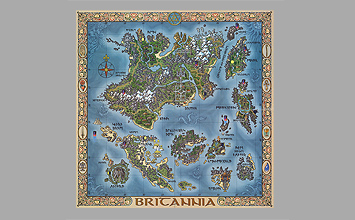
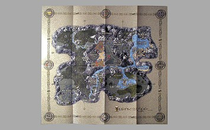

About This Collection
This comprehensive map index shows all unique maps from Ultima game editions, sorted by earliest release date. Each map shows all known releases with links to detailed information. Note that the description for each was taken from just one of the releases; please view specific releases for the most accurate information. Click "Show All Releases" to see the complete release history for each map.
Ultima I
Earliest release: 1985
Map Type: Paper
Map Type: Paper
Taiwanese software distributor 'Jing Hsun' released the early
Ultima games in the R.O.C. (Taiwan) for the IBM PC, the Apple II system as well as its
MPF III clones (same disks). The package consists of a flip-up soft sleeve with
translated game manuals, map and diskettes.
Earliest release: 1986
Map Type: Cardboard
Map Type: Cardboard
In 1986 Origin rewrote the original Ultima, improved its
graphics and playability and released it as 'Ultima I - The First Age of Darkness' for a
number of systems. The packaging and design is very similar to their other releases of
that time - it comes with separate cardboard maps of the four continents and a bag with
some 'Coins of the Realm' (1 Gold, 3 Silver and 1 Copper).
Earliest release: 1988
Map Type: Cloth
Map Type: Cloth
Ultima I was second in a series of Ultima games converted by
Origin and distributed by Ponycanyon for various japanese platforms.
It is based on the 1986 remake and comes in the usual videotape like box featuring the
original cover art work. Instead of the separate cardboard maps it has all four images
printed side by side on a single cloth map.
Ultima II

Earliest release: 1982
Map Type: Cloth
Map Type: Cloth
For the distribution of Ultima II Richard Garriott made a deal
with Sierra On-Line as they were the only publisher that agreed to include a cloth map
with each copy. The game was released under the 'Sierraventure' label and came in an
over-sized box (about 9x11.5" / 23x29 cm) that contained the nicely printed game manual
as well as the huge cloth map.
The manual contained in the first editions was of slightly different design and of a
more glossy, black & white print than those from later releases. It was accompanied
by an error correction flyer indicating that this is indeed one of the first prints.
Earliest release: 1984
Map Type: Cloth
Map Type: Cloth
In late 1983 Sierra began to use a simpler and much smaller
(just about 14x19 cm / 5.5x7.5") box design for many of their budget titles such as the
re-release of Ultima II for for the Apple II, IBM, C64 and Atari 8 bit platforms. The
content of this new package is pretty much identical to the later 'Grey Box' editions
but some items can vary randomly. The Atari edition usually contains the large cloth map
with new Sierra logo and a new style registration card.
- Atari 8-bit - Black Box Edition (1984)
- Commodore 64 - Grey Box Edition (1984)
- Atari 8-bit - Grey Box Edition (1984)
- Apple II - 1st Grey Box Edition (1984)
- IBM PC - 1st Grey Box Edition (1984)
- Commodore 64 - Black Box Edition (1984)
- Apple II - Black Box Edition (1984)
- Atari/C64 Combo - C64-Atari Combo Edition (1985)
- C64/Atari Combo - C64-Atari Combo Edition (1985)

Earliest release: 1984
Map Type: Cloth
Map Type: Cloth
In 1984 Sierra began to re-release Ultima II for a number of
systems in much smaller, cheaper looking boxes (6.5x9" / 17x23 cm) that had the new
large Sierra logo on the front cover. All documentation was shrinked to a small booklet
that varies a bit for each system.
There are two distinctive box variations - the earlier one has a quote by Softalk
Magazine on the back, later editions feature a line from A+ Magazine and have an
additional "50000 copies sold" SPA sticker on the front. This release usually contained
the smaller, nylon-made cloth map without any logos (40x30 cm / 16x12").

Earliest release: 1985
Map Type: Cloth
Map Type: Cloth
The first ports of Ultima games onto japanese 8-Bit
homecomputers were made by a company named Starcraft. While the games itself seem to be
similar to the Apple II original (only very limited Japanese translation) the packaging
and content is very different. The box is small, just the size of a 5.25" disk and
contains fully translated manuals as well as a cloth map. There are different versions
for the PC9801 series, on 5.25" or 3.5" disks.
Earliest release: 1989
Map Type: Cloth
Map Type: Cloth
The Ponycanyon version of Ultima II for japanese computer
systems is the only 'real' re-release of this game by Origin. It comes in a clamshell
type box with the original artwork on the front cover and contains a new set of
translated manuals (similar to those found in the Ultima 1 remake) as well as a thin
cloth map.
Ultima III
Earliest release: 1983
Map Type: Cloth
Map Type: Cloth
The first editions of Ultima III had a quite unique box design
consisting of two covers made of folded hard paper with very glossy surface. It is
missing the Origin logo on the front but has the Houston,TX 77258 address printed on the
back side. The reference card of this particular release (grey with dark blue text) and
the included clue book flyer have that Houston address as well.
Later prints of Ultima III may contain remnants from previous releases so mix ups are
quite common!
- Apple II - 1st Edition (1983)
- IBM PC - 1st Edition (1983)
- Commodore 64 - 1st Edition (1983)
- Atari 8-bit - 1st Edition (1983)
- Commodore 64 - 2nd Edition (1983)
- Apple II - 2nd Edition (1983)
- Atari 8-bit - 2nd Edition (1986)
- Commodore 64 - 3rd Edition (1986)
- C64/Atari Combo - Atari Combo Edition (1986)
- Atari/C64 Combo - Atari Combo Edition (1986)
- Apple II - 3rd Edition (1986)
- IBM PC - 2nd Edition (1986)
Earliest release: 1985
Map Type: Paper
Map Type: Paper
A very rare completely localized edition of Ultima III for
Apple II was released by French publisher Ediciel (Translation by Pierre Rosenthal). The
small book-like plastic box contains the game software on cassette and fully translated
documentation as well as a small paper map.
Earliest release: 1986
Map Type: Cloth
Map Type: Cloth
Ultima III for the Atari ST was initially released around 1986.
It is very similar to the re-releases for other systems as far as box design and content
is concerned. However, the game itself has been improved quite a bit for this version,
the graphics are more colorful, there's mouse support and it also comes with the
complete soundtrack.
Earliest release: 1986
Map Type: Puzzle
Map Type: Puzzle
The first ports of Ultima games onto japanese homecomputers
were made by Starcraft. While the game itself seems to be very similar to the Apple II
original the packaging and content is very different. The package is small, just the
size of a 5.25" disk and consists of two separate boxes - one contains the manuals and
disks and the other a jigsaw puzzle of the Ultima III map.

Earliest release: 1986
Map Type: Paper
Map Type: Paper
A special version of Ultima III was released in the UK by US
Gold under their 'All American Adventures' label. The box is rather small and flimsy
(about 4/5 of the standard size) and contains smaller versions of the original manuals
plus a black and white copy of the Exodus map. There are C64 and Atari versions.

Earliest release: 1988
Map Type: Cloth
Map Type: Cloth
In 1989, Ponycanyon released a remake of Ultima III for a
number of japanese computer systems. Just like the previous releases of Ultima I,II and
IV it was distributed in a flip up plastic box that contained the original set of
manuals (translated) as well as the cloth map (very different from the original). There
are two variations of the MSX release with box print and labels (orange or light blue)
indicating either DD or HD version of the game. However, the included diskettes are
always of standard low density format.
Ultima IV
Earliest release: 1985
Map Type: Cloth
Map Type: Cloth
The Original Ultima IV was released in 1985, initially for the
Apple II but shortly after also for the IBM PC and C64 homecomputer. The cloth map
included in this first edition was of a slightly different make and design than those
from later packages. The material feels synthetic and soft and the actual print is very
blurry and of a more reddish tint (although this varies). Ultima IV was the first Ultima
that came with an additional trinket - a small metal ankh.
Earliest release: 1985
Map Type: Paper
Map Type: Paper
Taiwanese software distributor 'Jing Hsun' released the early
Ultima games in the R.O.C. (Taiwan) for the IBM PC, the Apple II system as well as its
MPF II clones (same disks). The package consists of a flip-up soft sleeve with
translated game manuals, map and diskettes. For Ultima IV they even included a special
trinket: a key chain with embossed ankh and inscription.
Earliest release: 1985
Map Type: Paper
Map Type: Paper
The Korean edition of Ultima IV for the IBM PC platform was
released by local software distributor SKC Soft Land. The flip-up plastic box contains a
fully translated game manual, the set of 5.25" disks and a black and white paper map.
Apparently the game software was not localized.
Earliest release: 1986
Map Type: Cloth
Map Type: Cloth
Later editions of Ultima IV for the C64 contained a new type of
cloth map made of more sturdy, cotton-like material and slightly different in design.
The print was more blueish and less blurry and of overall better quality than the
original map and at least some editions are missing the 'Cape of Heroes' writing on the
lower part. This release usually contained a new style Cluebook note.

Earliest release: 1987
Map Type: Cloth
Map Type: Cloth
The Ponycanyon releases of Ultima IV are pretty much identical
for all systems, they all contain the 3rd generation type cloth map as well as fully
translated manuals and come in the same flip-up plastic box. The 16 bit versions offer
high resolution graphics (640x400) and excellent background music / sound fx.
- PC-98 - Jap. Ponycanyon Remake 5.25" HD (1987)
- Atari 8-bit - 2nd Edition (1987)
- PC-88 - Japanese Ponycanyon Remake (1987)
- Atari ST - Microprose Edition (EU) (1987)
- PC-98 - Ponycanyon Remake 3.5" HD (JP) (1987)
- IBM PC - 1st Edition (1987)
- FM-7 - Japanese Ponycanyon Remake (1987)
- MSX - Japanese Ponycanyon Remake (1987)
- Sharp X1 - Japanese Ponycanyon Remake (1987)
- Commodore 64 - Microprose Edition (EU) (1987)
- FM-7 - Japanese Ponycanyon Remake (1987)
- Atari ST - Microprose Edition (FR) (1987)
- Atari ST - Standard Edition (1987)
- IBM PC - 1st Edition 3.5in (1987)
- Amiga - Standard Edition (1988)
- IBM PC - Microprose Edition (EU) (1988)
- Sharp X68000 - Japanese Ponycanyon Remake (1988)
- Amiga - Microprose Edition (EU) (1988)
- IBM PC - 2nd Edition (1989)
- IBM PC - 2nd Edition 3.5in (1989)
Earliest release: 1987
Map Type: Paper
Map Type: Paper
This rare special edition of Ultima IV for the C64/128 was
distributed by US Gold in the UK and some other European countries only. It comes in a
small (6x8.5" / 15x21 cm) flip-up plastic box that contains smaller versions of the
original manuals, a paper print of the original 1st generation map and 2 5.25" disks.
There's no ankh included.
The German Edition contains a translated Reference Card (Spielerkarte).

Earliest release: 1989
Map Type: Paper
Map Type: Paper
Following the success of Ultima (3): Exodus on the NES, Origin
also ported its sequel onto this system. (Famicom in Japan). Again they did not use the
numeration of the main series but just named it Ultima: Quest of the Avatar instead. The
box contains the cartridge, instruction booklet, a folded papermap (with moongate travel
explanations and maps for all dungeons on the back) and even an 84 pages hintbook for
the game.

Earliest release: 1990
Map Type: Paper
Map Type: Paper
Ultima IV for the Mastersystem is the first (and so far the
only) Ultima that was ported to a Sega game console. It seems that most (if not all) of
these cartridges were produced for the European market, they contain a multi-lingual
(English, French and German) manual, both books from the original version as well as a
folded paper map. The books were of different color for each of the 3 editions (pink for
French version), fully translated and did not fit inside the gamebox - thus most of them
have been lost meanwhile.
Earliest release: 1992
Map Type: Cardboard
Map Type: Cardboard
Fujitsu Japan released Ultima IV for their 'FM-Towns' computer
system in 1992. The game was fully localized and redesigned for this system (it comes on
CD) and benefited from its audio/visual capabilities.
The box design is similar to the Ponycanyon releases but features complete new artwork
and its content differs considerably from previous releases - it has a new set of
manuals and none of the trinkets or clothmaps. It contains a folded card board map of
the Realm instead.
Ultima V
Earliest release: 1986
Map Type: Paper
Map Type: Paper
Taiwanese software distributor 'Jing Hsun' released the early
Ultima games in the R.O.C. (Taiwan) for the IBM PC, the Apple II system as well as its
MPF II clones (same disks). The package consists of a flip-up soft sleeve with
translated game manuals, map and diskettes.

Earliest release: 1987
Map Type: Cloth
Map Type: Cloth
Ultima V marks the end of the series on the Apple II. Here it
once began but in the era of 16 bit computers this system became more and more obsolete
and could not compete in a market dominated by the upcoming Atari STs, Amigas or even
IBM PCs - technically it is thus one of the least impressive versions. The box of the
first edition had bright green artwork on the backside and featured screenshots of this
particular release. Additionally, it also contained a small note correcting an error on
the reference card.
- Apple II - Standard Edition 'A' (1987)
- IBM PC - Standard Edition 'B' 5.25LD (1988)
- Commodore 64 - Standard Edition 'B' (1988)
- Apple II - Standard Edition 'B' (1988)
- IBM PC - 5.25LD (1989)
- Apple II - Microprose Edition (EU) (1989)
- Commodore 64 - Microprose Edition (EU) (1989)
- Apple II - Standard Edition 'C' (1989)
- IBM PC - Standard Edition 'C' 5.25LD (1989)
- IBM PC - Microprose Edition 3.5LD (EU) (1989)
- IBM PC - Standard Edition 'C' 3.5LD (1989)
- Commodore 64 - Standard Edition 'C' (EU) (1989)
- IBM PC - Standard Edition 'C' (EU) (1989)
- IBM PC - Standard Edition 'B' 3.5LD (1989)
- IBM PC - Microprose Edition 5.25LD (EU) (1989)
- Commodore 64 - Standard Edition 'C' (1989)
- Amiga - Standard Edition 'C' (EU) (1990)
- Atari ST - Standard Edition 'C' (1990)
- Amiga - Standard Edition (C) (1990)
- Atari ST - French Edition (1990)
- Atari ST - 2nd Edition 'C' (1990)
Earliest release: 1989
Map Type: Paper
Map Type: Paper
The Chinese edition of Ultima 5 was published by Taiwanese game
company Soft World Research Center as part of their low budget series. The game was
acually split in two sets with part one containing the Program and Britannia disks and
part two consisting of Dungeon and Underworld as well as a small paper map.

Earliest release: 1989
Map Type: Paper
Map Type: Paper
The Chinese edition of Ultima 5 was published by Taiwanese game
company Soft World Research Center as part of their low budget series. The game was
acually split in two sets with part one containing the Program and Britannia disks and
part two consisting of Dungeon and Underworld as well as a small paper map.

Earliest release: 1990
Map Type: Cloth
Map Type: Cloth
The Ponycanyon version of Ultima V is only available for the
Japanese 16 bit computers. Graphically and gameplay wise it follows the previous
releases for these systems (high res graphics at 640x400x8). The game was distributed in
the usual plastic flip box that contained the documentation (fully translated but
missing Underworld Journal) as well as a cloth map (almost identical to the original
one) and the codex coin.
Earliest release: 1990
Map Type: Paper
Map Type: Paper
Ultima: Warriors of Destiny is the last in the series of
conversions for the Nintendo console. The gameplay is very different from the Original
Ultima V, partly due to lack of input controls but the game itself and its storyline
have been stripped down considerably as well. The box only contains the cartridge,
instruction booklet / hint book as well as a paper map.
Earliest release: 1993
Map Type: Cardboard
Map Type: Cardboard
Fujitsu Japan released Ultima V for their 'FM-Towns' computer
system in 1993. The game was fully localized and redesigned for this system (it came on
CD) and benefited from its audio/visual capabilities. The box design is similar to the
Ponycanyon releases but features complete new artwork and its content differs
considerably from previous releases - it comes with a new set of manuals and without any
of the trinkets or clothmaps. It does contain a card board map as well as a small poster
showing a female warrior and some kind of dragon (?) instead.
Ultima VI

Earliest release: 1990
Map Type: Cloth
Map Type: Cloth
Ultima VI was the first game of the series that fully utilized
the audio-visual capabilities of "modern" PCs. It supported VGA mode with 256 colors and
various kinds of soundcards. European versions had two separate Reference Guides, a
French and an English one.
Apart from the customary cloth map and trinket (an 'orb of the moons' made of black
glass and of varying size) this particular package also contained two sets of game disks
(3.5" and 5.25").
- IBM PC - Standard Edition Dual Media (EU) (1990)
- IBM PC - Standard Edition 3.5LD (US) (1990)
- IBM PC - Standard Edition 5.25LD (US) (1990)
- IBM PC - Special Edition (US) (1990)
- IBM PC - Standard Edition 3.5LD (EU) (1990)
- IBM PC - Standard Edition 5.25LD (EU) (1990)
- Commodore 64 - Standard Edition (EU) (1991)
- Commodore 64 - Standard Edition (US) (1991)
- PC-98 - Disk Edition 5HD (JP) (1992)
- PC-98 - Disk Edition 3.5HD (JP) (1992)
- Sharp X68000 - Japanese Edition (1992)
Earliest release: 1990
Map Type: Paper
Map Type: Paper
The Korean edition of Ultima VI for the IBM PC platform was
released by local software distributor SKC Soft Land. The sturdy cardboard box contains
a fully translated game manual, the set of 5.25" disks and a color paper map. Apparently
the game software was not localized.
Earliest release: 1991
Map Type: Cardboard
Map Type: Cardboard
Ultima VI was the last part of the series for the Atari ST
system. It was only released in Europe and much later than the original versions,
probably too late to sell in significant quantities on the few remaining ST's. Box and
content is similar to the Amiga version (paper map only) - in addition to the
multilingual Atari ST Reference Guide it also contains the IBM PC card.
- Atari ST - Standard Edition (EU) (1991)
- IBM PC - Special Promotional Version 3.5HD(US) (1991)
- IBM PC - Original Uncut Version 5.25HD(EU) (1991)
- Amiga - Standard Edition (EU) (1991)
- IBM PC - Special Promotional Version 5.25HD(US) (1991)
- IBM PC - Original Uncut Version 3.5HD(EU) (1991)
- Amiga - Standard Edition (US) (1991)
- IBM PC - Hit Squad Budget Edition (UK) (1992)

Earliest release: 1991
Map Type: Cloth
Map Type: Cloth
Fujitsu Japan released Ultima VI for their 'FM-Towns' computer
system in 1991. The game was fully localized and redesigned for this system (it comes on
CD) and is the first Ultima that offers fully digitized speech for all dialogues. The
box design is similar to the Ponycanyon releases but features complete new artwork and
its content differs considerably from previous releases - it comes with a new set of
manuals and without any of the trinkets. Just like other parts of the series for the FM
Towns it contains a card board map (green monochrome) and a poster (showing a winged
gargoyle) but also a cloth map similar to the original.
Earliest release: 1992
Map Type: Paper
Map Type: Paper
The Chinese edition of Ultima 6 was published by Taiwanese game
company Soft World. The small plastic box contains a set of fully translated manuals and
a new type of paper map. The actual game is the English version though.
Earliest release: 1992
Map Type: Paper
Map Type: Paper
In 1992 Origin rereleased Ultima VI (with GT Interactive as
distributor) in a smaller box (about 7x9" / 17x22 cm). The included manuals, such as
Compendium and Reference cards are simple black & white prints and there's only a
thin, folded paper map and no moonstone.
Ultima VII
Earliest release: 1991
Map Type: Paper
Map Type: Paper
The Spanish edition of Ultima VII was released by local
publisher DRO Soft. All documentation and game software has been fully translated
including ingame speech.
Earliest release: 1991
Map Type: Paper
Map Type: Paper
The Korean edition of Ultima VII for the IBM PC platform was
released by local software distributor SKC Soft Land. The sturdy cardboard box contains
a fully translated game manual, the set of 5.25" disks and a color paper map. Apparently
the game software was not localized.
Earliest release: 1992
Map Type: Cloth
Map Type: Cloth
Amongst most fans and critics, Ultima VII is regarded as one of
the best roleplaying games of all times. Not only is it a truly epic adventure and
immersive gameworld - it's also the first (and only) part of the series that spawned its
own sequels...
The original disk edition in the all black box has never been re-released independently,
only as part of some 'complete' compilation (and there exist many of those).
Earliest release: 1992
Map Type: Cloth
Map Type: Cloth
Ultima VII was the first Ultima that became fully localized for
the European market (there are English, German and French editions), including manuals,
ingame speech and even the game's title on the box (Die Schwarze Pforte). The package is
of the new EU standard size and contains modified manuals (size and print), a new type
of cloth map with a thick yellow border around it (and of rather mediocre print quality)
and the Fellowship medaillon.
Earliest release: 1992
Map Type: Cloth
Map Type: Cloth
Ultima VII was the first Ultima that became fully localized for
the European market (there are English, German and French editions), including manuals,
ingame speech and even the game's title on the box. The package is of the new EU
standard size and contains modified manuals (size and print), a cloth map and the
Fellowship medaillon.
Later editions were already released by Electronic Arts and contained a new set of
disks, the US style cloth map (second print), manuals with new address and a
multilingual Player Reference Card.
Earliest release: 1992
Map Type: Cloth
Map Type: Cloth
The Chinese edition of Ultima 7 was published by Taiwanese game
company Soft World. It has a separate cover sleeve much like the European editions and
contains fully translated manuals, disks and a modified cloth map of Britannia. The
actual game is the English version though.

Earliest release: 1994
Map Type: Paper
Map Type: Paper
European distributor BOMICO re-released this game under
different low-budget labels in the UK and Germany (HitSquad and SoftPrice). The box is
of the same size as the original European editions and contains the manuals (same
content but different cover), a paper map and the disks.
Earliest release: 1994
Map Type: Paper
Map Type: Paper
Ultima VII is the last in the series of Ultima games for the
Super Nintendo system. The game itself is very different to the PC original, there's no
party system, not nearly as much dialogue and the story has been altered quite a bit
too. Apart from an instruction booklet and a papermap of Britannia it does not contain
any other documentation.
Ultima VII Part 2
Earliest release: 1993
Map Type: Cloth
Map Type: Cloth
Following the huge success of Ultima VII Origin created a
sequel using the same game engine. Unlike Part One it did not come with any trinkets and
the cloth map was only included in the first US editions.
Earliest release: 1993
Map Type: Paper
Map Type: Paper
Like many of the earlier EA releases the EU package of Serpent
Isle looks considerably cheaper than its US counterpart. It contains a paperprint
instead of the cloth map and comes with a black & white manual and the usual EA box
design (separate sleeve and box). Unlike Part 1 it was never fully localized (except
manuals) so there's only an English version available.

Earliest release: 1993
Map Type: Paper
Map Type: Paper
The Korean edition of Ultima VII Part II Serpent Isle was
released by local software distributor SKC Soft Land. The sturdy cardboard box contains
a fully translated game manual, the set of 5.25" disks and a black and white paper map.
Apparently the game software was not localized.
Ultima VIII
Earliest release: 1994
Map Type: Cloth
Map Type: Cloth
Initially, Ultima VIII was released on 3.5" disks. It was the
only US-Edition that featured the original cover artwork created by Dennis Loubet with
the large pentagram on flames. It contained a colorful cloth map printed on some
nylon-type material and an aluminium pentagram coin as additional trinket.
Earliest release: 1994
Map Type: Cloth
Map Type: Cloth
The European releases of Ultima VIII came in typical EA style
packages consisting of a black box with separate cover sleeve. The design was the same
for all editions (disk, CD) - pentagram on front cover, just like the US disk release.
The game itself was fully localized for France, Germany and UK including manuals, ingame
speech (or separate speech packs) - the CD-ROM edition contained all three languages.
The overall print quality of the documentation and especially the map was poor (and also
of slightly different make).
Earliest release: 1994
Map Type: Paper
Map Type: Paper
The Korean edition of Ultima VIII for the IBM PC platform was
released by local software distributor SKC Soft Land. The package has a separate cover
sleeve and contains a fully translated game manual, the set of 3.5" HD disks and a color
paper map. Apparently the game software was not localized.
Earliest release: 1994
Map Type: Paper
Map Type: Paper
The Spanish edition of Ultima VIII was produced and distributed
by local publisher DROSoft. The game as well as package and documentation was fully
localized including ingame speech. It contains a paper map and a single black &
white manual.
Earliest release: 1996
Map Type: Paper
Map Type: Paper
Like most Chinese editions, Ultima 8 was published by Taiwanese
game company Soft World. It has a separate cover sleeve much like the European editions
and contains a fully translated manual, disks and a modified Pagan map on sturdy paper.
The actual game is the English version though.
Ultima IX

Earliest release: 1999
Map Type: Cloth
Map Type: Cloth
In reference to the largest Ultima fanclub - the 'Ultima
Dragons' - Origin released a special 'Dragon Edition' of Ultima IX at about the same
time as the standard version. The box is extra large (about 12x15" / 31x38cm) and
contains a number of additional items such as the Ascension poster, Soundtrack CD,
Ultima 1-8 Collection and a small ankh pendant.
- IBM PC - Dragon Edition (US) (1999)
- IBM PC - Standard Edition (US) (1999)
- IBM PC - Japanese Premium Edition (2000)
- IBM PC - EU Standard Edition (DE) (2000)
- IBM PC - EU Standard Edition (NL,GR) (2000)
- IBM PC - Polish Edition (PL) (2000)
- IBM PC - EU Standard Edition (IT) (2000)
- IBM PC - EU Standard Edition (FR) (2000)
- IBM PC - South African Edition (ZA) (2000)
- IBM PC - EU Standard Edition (UK) (2000)
Earliest release: 1999
Map Type: Cloth
Map Type: Cloth
The Chinese edition of Ultima IX resembles the Korean and Asia
Pacific Editions but contains a complete set of translated manuals. There are no extras
like the tarot cards or cloth map of the US or European editions.

Earliest release: 2000
Map Type: Cloth
Map Type: Cloth
Unlike the US or European releases, the Japanese standard
edition of U9 is rather average as far as its box content is concerned. It does not
contain the tarot cards nor the cloth map (it has a paper one instead) and the books are
just like any other ordinary game manual with a high glossy sleeve. The box is of about
the same size like the US version. All text in the game as well as the included
documentation has been translated to Japanese though.
Earliest release: 2000
Map Type: Paper
Map Type: Paper
The Thai Edition of Ultima IX was available from EA Thailand
exclusively. It contains fully translated manuals and spellbook (Thai) as well as a
paper map of Britannia. The software on CD is the English (US) version.

Earliest release: 2000
Map Type: Paper
Map Type: Paper
The Russian Ultima IX was released as a standard European flip
up box and contains russian language versions of the manuals and a paper map as well as
the UK/English set of game CDs.
Ultima Underworld

Earliest release: 1992
Map Type: Paper
Map Type: Paper
Only very few titles in computer gaming history revolutionized
the industry as much as Ultima Underworld did. Before there was Doom and its myriad of
clones and massmarket compatible action shooters, a small company named 'Looking Glass'
developed a 3D engine that not only allowed free movement in all directions but also
attempted to combine that with traditional roleplaying features.
Earliest release: 1992
Map Type: Paper
Map Type: Paper
The Korean edition of Ultima Underworld 1 was released by local
software distributor SKC Soft Land. The sturdy cardboard box contains a fully translated
game manual, the set of 5.25" disks and a paper map. Apparently the game software was
not localized.
Earliest release: 1992
Map Type: Paper
Map Type: Paper
The Chinese edition of Ultima Underworld was published by
Taiwanese game company Soft World. The package has a separate cover sleeve much like the
European editions and contains fully translated manuals and disks. The actual game is
the English version though.
Earliest release: 1993
Map Type: Paper
Map Type: Paper
Local distributor IPS Computer Group licensed Ultima Underworld
from Electronic Arts and published it in Poland. The standard (European) package
contains a new set of disks and localized manuals and map. The actual software is the
English version.
Earliest release: 1993
Map Type: Paper
Map Type: Paper
Ultima Underworld was one of the earlier games released under
the 'Electronic Arts Victor' label in Japan. It was distributed in a considerably
smaller box (about 6x9" / 16x23 cm) that contained a set of translated manuals, a paper
map (slightly different layout as original) as well as an ankh-shaped paperknife as
trinket.
Ultima Underworld II
Earliest release: 1993
Map Type: Paper
Map Type: Paper
Just a year after the first Underworld game, Origin released a
sequel which had improved graphics, a more advanced spell system and was better
integrated into the current main series plot. Storywise it is therefore completely
unrelated to the first Underworld game - on the Ultima timeline it takes place about one
year after the destruction of the Black Gate (Ultima 7 Pt. 1) and before the Avatar is
being send to the Serpent Isle (Ultima 7 Pt. 2).

Earliest release: 1993
Map Type: Paper
Map Type: Paper
There exist three versions of the European Ultima Underworld II
edition (English, French or German). All the documentation for these regional releases
has been completely translated but the game itself is always in English.
The packaging is very similar to other EA releases of that time - black box with
separate cover sleeve. Manuals as well as the paper map differ a bit from the US
Original, also the used paper is more glossy and the overall print quality slightly
worse (and only black and white)
Earliest release: 1993
Map Type: Paper
Map Type: Paper
Local distributor IPS Computer Group licensed Ultima Underworld
II from Electronic Arts and published it in Poland. The standard (European) package
contains a new set of disks and localized manuals and map. The actual software is the
English version.
Earliest release: 1993
Map Type: Paper
Map Type: Paper
The Korean edition of Ultima Underworld 2 was released by local
software distributor SKC Soft Land. The sturdy cardboard box contains a fully translated
game manual, the set of 5.25" disks and a paper map. Apparently the game software was
not localized.
Earliest release: 1995
Map Type: Paper
Map Type: Paper
Ultima Underworld II was released in Japan by Electronic Arts
Victor in a similar fashion as its predecessor (and also for the same range of systems).
It was fully translated, came in a smaller box (about 6x9" / 16x23 cm) and contained the
same type of manuals like the original release for IBM PCs, including a paper map of
Lord British's Castle (with Japanese annotations).
Savage Empire
Earliest release: 1990
Map Type: Paper
Map Type: Paper
The Korean edition of the Savage Empire for the IBM PC platform
was released by local software distributor SKC Soft Land. The flip-up plastic box
contains a fully translated game manual, the set of 5.25" disks and a black and white
paper map. Apparently the game software was not localized.

Earliest release: 1991
Map Type: Paper
Map Type: Paper
This Special Edition of Savage Empire was only available for
people who pre-ordered the game. It has an autographed box and contains an additional
T-Shirt (white, featuring dinosaur artwork and the slogan 'I conquered the Savage
Empire') plus the official Savage Empire hint book. The rest of the package is identical
with the regular retail version.
- IBM PC - Special Ed. 5.25HD (US) (1991)
- IBM PC - Standard Ed. 5.25HD (US) (1991)
- IBM PC - Standard Ed. 5.25HD (EU) (1991)
- IBM PC - Standard Ed. 3.5LD (US) (1991)
- IBM PC - Standard Ed. 5.25LD (EU) (1991)
- IBM PC - Standard Ed. 3.5LD (EU) (1991)
- PC-98 - Japanese Edition 3.5HD (1993)
- Sharp X68000 - Japanese Edition (1993)
- PC-98 - Japanese Edition 5.25HD (1993)
Earliest release: 1992
Map Type: Paper
Map Type: Paper
The Chinese edition of The Savage Empire was published by
Taiwanese game company Soft World. The small plastic box contains a fully translated
manual and a slightly modified paper map. The actual game is the English version though.
Martian Dreams
Earliest release: 1990
Map Type: Paper
Map Type: Paper
The Korean edition of Martian Dreams for the IBM PC platform
was released by local software distributor SKC Soft Land. The flip-up plastic box
contains a fully translated game manual, a code card to answer copy protection
questions, the set of 5.25" disks and glossy color paper map. Apparently the game
software was not localized.

Earliest release: 1991
Map Type: Paper
Map Type: Paper
The second episode in the Worlds of Ultima series takes the
Avatar about 100 years back in time and to the Mars, alongside some illustrous
personalities of history such as Sigmund Freud, Mark Twain or Lenin.
Technically it is basically more of the same - just like Savage Empire it utilizes the
Ultima VI engine.
The European edition contains a multilingual 'Getting Started Guide' (English, French,
German, Spanish).
Earliest release: 1992
Map Type: Paper
Map Type: Paper
The Chinese edition of Martian Dreams was published by
Taiwanese game company Soft World. The small plastic box contains a fully translated
manual and a slightly modified paper map. The actual game is the English version though.
Ultima Online

Earliest release: 1997
Map Type: Cloth
Map Type: Cloth
The so called "Charter Edition" of Ultima Online was only
available as direct pre-order from EA's own online shop. It contained an additional
print of the Hildebrandt artwork, a Charter Membership certificate, prepaid online fee
for 3 months and came in a large, flat black box (46 x 30 x 2,5 cm / 18 x 12 x 1")
signed by Lord British. Other than that it was identical with the retail version.
Earliest release: 1997
Map Type: Cloth
Map Type: Cloth
The Japanese version is the only non-US edition of the original
Ultima Online that made it to the retail shelves. It had pre-paid game time for 90 days
and contained fully translated documentation including a small Play Guide booklet
explaining the basics of the game. The cloth map included with this release seems to be
of slightly different make, it's thinner and the print looks more clear and colorful.
There's no pin included.
Earliest release: 1998
Map Type: Paper
Map Type: Paper
A later re-release of the Japanese Ultima Online came in a much
simpler package with reduced pre-paid game time for 30 days. It basically contained the
same documentation as the first edition but only had a paper map.
Ultima Online: The Second Age

Earliest release: 1998
Map Type: Paper
Map Type: Paper
Roughly a year after the initial release of Ultima Online,
Origin put together a new version that introduced a new landmass and several other
enhancements. Registered Players of Ultima Online could order it as update pack which
did not include the box and contained a special 'Upgrade CD'
- IBM PC - Upgrade Edition (US) (1998)
- IBM PC - Russian Edition (RU) (1998)
- IBM PC - EU Edition (DE) (1998)
- IBM PC - EU Edition (UK) (1998)
- IBM PC - Second Edition (US) (1998)
- IBM PC - Regular Edition (US) (1998)
- IBM PC - Discovery Edition (AUS) (1999)
- IBM PC - 3rd Japanese Edition (1999)
- IBM PC - 1st Japanese Edition (1999)
- IBM PC - Korean Edition (KR) (1999)
- IBM PC - Japanese Convenience Store Edition (1999)
- IBM PC - 2nd Korean Edition (KR) (1999)
- IBM PC - 2nd Japanese Edition (1999)
- IBM PC - 1st Japanese Edition (1999)
Ultima Online: Renaissance
Earliest release: 2001
Map Type: Paper
Map Type: Paper
Under the 'New Ultima Online' label EA Japan released budget
versions that don't contain the 3D client software introduced with UO: Third Dawn. This
first edition is still based on the older UO: Renaissance and thus not offer any
features of the later retail releases. It has an additional 'Guide Book' with relevant
trivia and instructions for new users.
Ultima Online: Third Dawn
Earliest release: 2001
Map Type: Cloth
Map Type: Cloth
UO: Third Dawn is a completely new client software for the
Ultima Online game world. As the name implies, it utilizes 3D technology for all
characters and some extra graphical effects. On top of that it also includes once again
a new land mass, only accessible through this client. Registered players could order
this special upgrade pack that contained an additional 'promotional' cloth map of
Britannia and the Lost Lands (no box or manual though) as well as the retail version
paper map of the new Ilshenar Lands.
Earliest release: 2001
Map Type: Paper
Map Type: Paper
A cheaper variation of the New Player Edition of UO: Third Dawn
was released through Convenience Stores by Japanese Publisher Digicube. The package is
slightly bigger than the standard DVD boxes and contains pretty much the same
documentation as the other editions plus an extra comic booklet 'Britannia Lifestyle
Guide'.
Earliest release: 2001
Map Type: Paper
Map Type: Paper
Just like the Japanese release the European editions of Ultima
Online: Third Dawn come in standard DVD boxes. They only contain a small (translated)
booklet plus a the paper map featuring the new lands (Ilshenar) on one side and the
original (plus Second Age) setting on the other.
Earliest release: 2001
Map Type: Paper
Map Type: Paper
The Asia Pacific Edition of Ultima Online: Third Dawn was
published by Electronic Arts Australia for the English language market of the East Asian
/ Oceanic / Pacific region (mainly Australia).
Earliest release: 2001
Map Type: Paper
Map Type: Paper
UO: Third Dawn is a completely new client software for the
Ultima Online game world. As the name implies, it utilizes 3D technology for all
characters and some extra graphical effects. On top of that it also includes once again
a new land mass, only accessible through this client. Registered players could order a
special upgrade pack that contained an additional 'promotional' cloth map of Britannia
and the Lost Lands (no box though).
Ultima Online: Lord Blackthorn's Revenge

Earliest release: 2002
Map Type: Paper
Map Type: Paper
In 2002 a series of special editions was released in Japan,
celebrating the 5th anniversary of Ultima Online. Each of them was dedicated to a
particular profession in the UO world - Warrior, Mage and Smith. Technically they are
identical with the standard "Lord Blackthorn's Revenge".
The golden DVD box is acccompanied by an additional 'Profession Guide Book'.
- IBM PC - 5th Ann. Edition - Smiths (JP) (2002)
- IBM PC - JP Convenience Store Edition (2002)
- IBM PC - 5th Ann. Edition - Mages (JP) (2002)
- IBM PC - 5th Ann. Edition - Warriors (JP) (2002)
- IBM PC - 5th Ann. Edition by Amazon (JP) (2002)
- IBM PC - JP New Player Edition (2002)
- IBM PC - JP Upgrade Edition (2002)
Earliest release: 2002
Map Type: Paper
Map Type: Paper
The European edition of Ultima Online: Lord Blackthorn's
Revenge was released in a standard DVD box just like most games nowadays. Documentation
is sparse and only consists of the manual, the McFarlaine comic booklet and a small
papermap (same as in Third Dawn). The comic was not localized.

Earliest release: 2002
Map Type: Paper
Map Type: Paper
UO: Lord Blackthorn's Revenge is an expansion pack resulting
from ideas of the cancelled Ultima Worlds Online: Origin project (UO2). It features a
range of new monsters designed by Spawn creator Todd McFarlane, various storylines as
well as numerous changes to the UO World such as a new virtue system. The new landmass
Ilshenar, introduced with the Third Dawn expansion, is now also playable with the 2D
client.
The regular small package edition was released quite some time after the 'limited'
edtion which contained the action figure, and in significantly lower quantities.
Ultima Online: Age of Shadows
Earliest release: 2003
Map Type: Paper
Map Type: Paper
Age of Shadows is the 5th expansion pack of Ultima Online
featuring a number of new additions such as a complete new landmass 'Malas', 2 new
professions as well as a tool to create houses and private property more efficiently.
The US package is just a small standard cardboard box that doesn't contain any
additional items.
Earliest release: 2003
Map Type: Paper
Map Type: Paper
Age of Shadows is the 5th expansion pack of Ultima Online
featuring a number of new additions such as a complete new landmass 'Malas', 2 new
professions as well as a tool to create houses and private property more efficiently.
The European editions are simple DVD boxes that contain localized versions of the manual
and control card.

Earliest release: 2003
Map Type: Paper
Map Type: Paper
Age of Shadows is the 5th expansion pack of Ultima Online
featuring a number of new additions such as a complete new landmass 'Malas', 2 new
professions as well as a tool to create houses and private property more efficiently.
The Japanese full version consists of a cardboard box that contains manuals, a code card
to create a new account and 2 separate paper maps.
Earliest release: 2004
Map Type: Paper
Map Type: Paper
In 2004 Electronic Arts released a special commemorative
package celebrating the 7th anniversary of Ultima Online. The small box contained the
latest installment of the game (Age of Shadows) plus the complete Ultima IX in the final
patched version. Nothing of the original documentation is included, just a small install
booklet, a thin 'Fan Guide' and a paper map of the Land of Malas. A separate sheet
provided registration codes for up to seven new Ultima Online accounts.
Ultima Online: Samurai Empire

Earliest release: 2004
Map Type: Paper
Map Type: Paper
The 'Samurai Empire' expansion pack marks a new era in the
Ultima Online game world by setting the adventure in an exotic Japanese-inspired land,
and by featuring two deadly new professions for players to master -- the Samurai and the
Ninja. Japanese versions that contained the 'Soul Stone' code had a bright green sticker
on the front of the box. People who pre-ordered the game received a special roll-out map
of the Tokuno Islands.

Earliest release: 2004
Map Type: Paper
Map Type: Paper
The 'Samurai Empire' expansion pack marks a new era in the
Ultima Online game world by setting the adventure in an exotic Japanese-inspired land,
and by featuring two deadly new professions for players to master -- the Samurai and the
Ninja. Consumers who pre-ordered the game received a code sheet to activate a special
ingame item called 'Soul Stone' which allowed the player to store or move skill points
from one character to another.
Ultima Online: Mondain's Legacy

Earliest release: 2005
Map Type: Paper
Map Type: Paper
Mondain's Legacy is the seventh expansion pack of Ultima
Online. It features a new playable race, the Elves, as well as numerous enhancement of
in-game equipment, new dungeons and quests. The standard US edition was exclusively
distributed as a 'pay per download' program. The localized Japanese version is also
available as normal retail release - there is a cardboard package New Player Edition and
an upgrade pack in a simple plastic box.
Ultima Trilogy I-III
Earliest release: 1989
Map Type: Cardboard
Map Type: Cardboard
The Ultima Trilogy was the first compilation of the Ultima
Series from Origin. The package contained 3 folded cardboard maps and a single manual
that covered all three games. It was available for a number of different systems beside
the IBM PC compatibles.
Earliest release: 1989
Map Type: Cardboard
Map Type: Cardboard
The Chinese edition of the Ultima I-III Trilogy was published
by Taiwanese game company Soft World. It has a separate cover sleeve much like the
European editions and contains fully translated manuals, floppy disks as well as the
cardboard maps. The actual games are the English versions.
Earliest release: 1990
Map Type: Cardboard
Map Type: Cardboard
The Ultima Trilogy was the first compilation of the Ultima
Series from Origin. The package contained 3 folded cardboard maps and a single manual
that covered all three games. It was available for a number of different systems beside
the IBM PC compatibles.
Earliest release: 1990
Map Type: Cardboard
Map Type: Cardboard
The Ultima Trilogy was the first compilation of the Ultima
Series from Origin. The package contained 3 folded cardboard maps and a single manual
that covered all three games. It was available for a number of different systems beside
the IBM PC compatibles.
Earliest release: 1991
Map Type: Cardboard
Map Type: Cardboard
The Ultima Trilogy was the first compilation of the Ultima
Series from Origin. The package contained 3 folded cardboard maps and a single manual
that covered all three games. It was available for a number of different systems beside
the IBM PC compatibles.
Ultima Second Trilogy IV-VI
Earliest release: 1991
Map Type: Cloth
Map Type: Cloth
In order to reduce a surplus of cloth maps and trinkets from
previous releases, many of the early Second Trilogy compilations were distributed as
'Special Limited Edition' that contained a complete set of cloth maps from U4, 5 and 6
as well as one of the trinkets that came with the original releases (mostly Ankh or
Coin). Other than that (and the large sticker on the box) these copies are identical
with the Standard editions.

Earliest release: 1992
Map Type: Cloth
Map Type: Cloth
The 'Second Trilogy' compilation consisting of Ultima IV - VI
was released in 1992. The box was of Ultima VI-like dimensions and came with all in all
7 disks (3.5" low density) and a single book containing most (but not all) of the
documentation from the original games. The included map is of the same type as the
cardboard map from the Ultima VI Amiga version and later PC re-releases, it just reads
'The Second Trilogy - Ultima IV-VI' instead.
Ultima I-VI Series
Earliest release: 1992
Map Type: Cardboard
Map Type: Cardboard
Basically, the Ultima I-VI Series CDs are just the two previous
trilogy releases combined into one. They contain all the maps and manuals, only the
software is on CD instead separate disks.
The much rarer Software Toolworks edition has a thicker but also shorter box - as a
result, the folded maps and the First Trilogy manual had to be bent slightly to fit in.
The Complete Ultima VII
Earliest release: 1993
Map Type: Cloth / Paper
Map Type: Cloth / Paper
The European editions of the first 'Complete Ultima VII'
compilation contained the same original manuals and maps like the US release (more
precisely, the original manuals from their respective language edition) - earlier
packages even contained the Ultima VII cloth map. The box was of the usual European EA
design (separate box and sleeve).
Earliest release: 1993
Map Type: Paper
Map Type: Paper
In late 1993 Origin/EA released a so called 'Complete Ultima
VII' compilation that consisted of both parts of Ultima VII including the two add-ons.
The regular edition came in the standard sized box with redesigned cover motif and
contained the complete set of manuals and two paper maps.
Earliest release: 1993
Map Type: Cloth
Map Type: Cloth
In late 1993 Origin/EA released a so called 'Complete Ultima
VII' compilation that consisted of both parts of Ultima VII including the two add-ons.
This first (and rather limited) edition came in a standard Serpent Isle box that
contained the complete set of manuals, two cloth maps and the original games on all in
all 15 disks.

Earliest release: 1998
Map Type: Paper
Map Type: Paper
A Polish edition of Ultima VII Complete was released by local
EA distributor IPS under their 'Zielona Seria' CD Classic series. The package is a
rather simple thin box with black and white manual and paper map.
Underworld Series
Earliest release: 1993
Map Type: Paper
Map Type: Paper
Like the Main Series compilation Origin also released both
Ultima Underworld games on CD as a complete boxed package. This first compilation still
contains all manuals as well as the paper maps of the original releases but not the
trinkets (runes bag). It is labeled as 'Special Promotional Release' like later
Underworld editions.